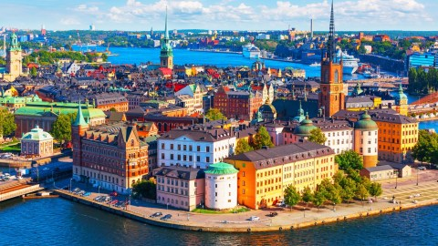

Our world today is expanding to new heights and reaches than had any other time in the past. We, humans, are more globally interconnected now than we ever were and are thriving in almost all fields and spheres of life. Today, we are doing everything possible to make sure our life is free of the various torments and issues of the past by incorporating previous knowledge and through the exploitation of technology. Innovation is plentiful and our societal values are changing for the betterment of everyone. Most of us here live in relative luxury and are by far the most privileged of any other previous generation. Yet in our race to make our lives more pleasant, we tend to leave behind certain counterparts of ours in the worldㅡthe unprivileged.
Due to the circumstances that surround these people, they are often limited by their social barriers in keeping up with the progress of the rest of the world. The quality of life in certain countries around the world still faces various struggles which negatively affect their standing on the international level. The relatively new concept of immigration has surfaced over the past few centuries and it has become clear which parts of the world stand out as more suitable to responsibly maintain human life over others.
Here, you will be seeing a variety of different factors and indicators of thriving countries, how we may maintain a stable global condition, which organizations strive towards this goal, while also getting a brief view of the distressing situations that many people across the world face in their day-to-day struggles.
There still remain various countries throughout the world which simply do not have the adequate essential needs to supply their population. This could be due to several reasons, all of which are at some point interconnected with one another. Various groups have arisen over the years which aim to tackle this problem, most commonly referred to as humanitarian organizations. The United Nations’ World Food Programme is an effective exampleㅡwith bases in over 80 countries globally, nearly all of which consist of developing nations and those with a severe lack of undertaking human rights. The two most prevalent themes of their goals are to end hunger and conflict. This is, of course, one of hundreds of other international humanitarian organizations which strive to cater to the needs of the unprivileged.
Though some changes are being made in helping the populace of monitored regions to receive their essential needs, many are still struggling in the uncatered-to regions of these nations. According to the World Hunger Statistics, above 795 million people are currently starving globally and over ⅓ of available food is being wasted. 25% of people in Sub-Saharan Africa are malnourished, making it the most highly-concentrated undernourished area in the world. The average annual earnings of its populace is a mere $2,715 CAD or roughly seven dollars and forty-five cents a day.
The U.N. currently maintains thirteen ongoing peacekeeping missions across four continents that consist of oppressed civilian populations and over 120 countries send peacekeepers to contribute to this mission. However, the budget for this cause is highly restricted, with a mere $7.3 billion, that when put into perspective amounts to roughly 0.5% of the global military expenditure. Despite the efforts, these causes cannot be carried out entirely successfully without the correct amount of support from governments and of course, us, the rest of the population. The most prevalent effort made by the United Nations, perhaps of all, at the current moment, is the response by its sub-organization W.H.O. (the World Health Organization) in combating against unsafe and lack of water sources. The W.H.O. consistently maintains sets of guidelines for the safe disposal of wastewater and how to sustain recreational water environments.
Since 2014, W.H.O. has been testing water treatment products to ensure that they conform to their strict performance criteria to protect consumers from pathogens. They also work to strengthen policy, monitoring mechanisms and performing standards to a national level so consumers are receiving adequate supply conditions. The W.H.O. also works very closely with UNICEF with regards to water and health, more specifically concerning sanitation and hygiene. The two organizations jointly developed the Water and Sanitation for Health Facility Improvement Tool (WASHFIT) which aims to collect data, assess and prioritize risks, before creating an intended plan of action in middle- and low-income settings. Such organizations are truly aiming to ameliorate the global condition, attempting to stick to their word of “no person should be left behind,” but are still in need of support to make this target achievable.
Some of the most prominent organizations which enduringly tend to humanitarian needs include, but are not limited to:
| Organization | Founding Year | Purpose |
|---|---|---|
| The World Food Programme | 1961 | Provide sustainable food assistance, address hunger, and promote food security. |
| The World Health Organization | 1948 | Deal with concerns related to international public health as the directing authority. |
| UNICEF | 1946 | Lead dealings with crises involving children by providing emergency food and healthcare. |
| International Red Cross | 1863 | To provide relief in their separate countries concerning a wide variety of issues pertaining to life quality. |
| Doctors Without Borders | 1971 | Provide medical assistance in areas of conflict and disease outbreak. |
In our modern age, information can travel around the globe in a matter of seconds. It is never the wrong idea to try or at least put in some effort to raise awareness on the subject of those less fortunate than us and in dire need of aid. Thankfully, many people are already taking to forms of social media, most commonly Twitter and Instagram, to set up awareness pages for potential viewers to take action. Despite ignorance from mainstream news outlets, social media has proven potent enough to create global cognizance of our less fortunate counterparts.
A recent, effective example of lone individuals causing global awareness was simply earlier in 2019, when Facebook, Twitter, and Instagram users began to change their profile pictures to a shade of dark blue to represent their solidarity for the people of Sudan. A crisis was underway, with government forces having massacred 100 people on the day of Eid due to unrest over food sources. One single 25-year old, Remaz Abdelgader, living in Washington D.C., took to Instagram, encouraging his followers to change their profile pictures to the renown shade of blue; and surely enough, by some point, thousands if not hundreds of thousands had followed suit.

Promoting international stability by staying involved and understanding the global situation may simply not be enough. It may be the ideal time for YOU to get involved and there are a variety of methods in which you may do so. If you feel passionate on the subject of giving other people aid, there are various opportunities, volunteer and paid positions alike that can get you on track to making our world more superior for generations to come. American epidemiologist Larry Brilliant was highly passionate about monitoring upcoming epidemics, regardless of whose territory he was stepping into. He once wrote a paper about how agricultural issues led to the chemical PBB (Polybrominated Biphenyls) making its way into the food chain and eventually into nursing mother’s milk. His sample reported that millions of women across Michigan were likely afflicted, of course angering the companies which created the root products, though making a significant breakthrough in tackling a potentially major upcoming issue.
Many today are citing the need for an important figure to emerge as a spokesperson, just as was the case for the Gandhis, Mandelas, and Martin Luther Kings of the past. Leadership qualities are immensely required for the communication of thoughts and ideas in an effective method, even if unpopular, though still reasonable. Alarmism is never the key, though it is necessary for informed individuals to rise to the occasion and propose modern, crucial solutions to upcoming problems whether they be in the near future or further on. An example of such an issue is climate change, which is currently one of the principal world concerns amongst youth of today, which, however, has yet to develop reasonable proposals to tackle the issue once and for all. These voices are required to sway the opinion of voters and legislators into recognizing key threats or issues within their respective countries, if not pressure them to enforce solutions to the problem.
HTML Validated